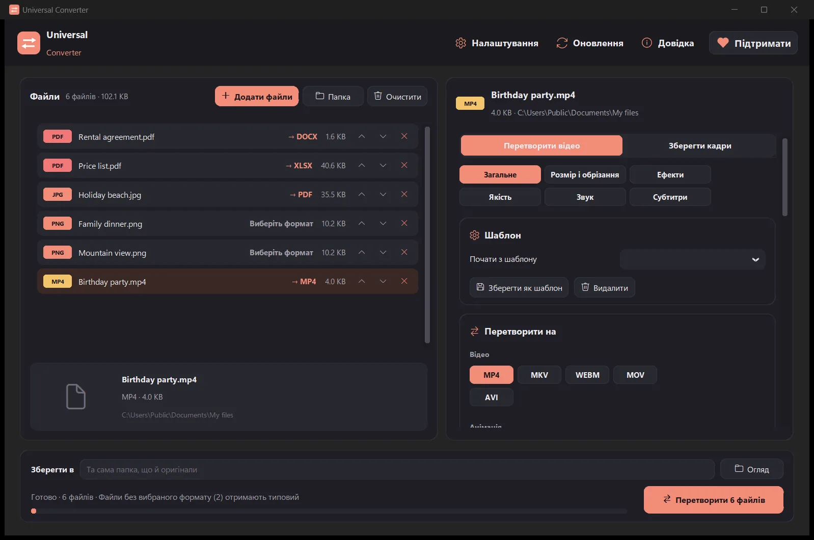

Перетворюйте відео між MP4, MKV, WebM, MOV і AVI
Universal Converter відкриває MKV, MOV, AVI, WMV, FLV, MPG, TS, WebM тощо й перетворює їх у MP4, MKV, WebM, MOV або AVI, зберігаючи вибрані вами аудіо- й субтитрові доріжки. MP4 відтворюється майже всюди. Програма для Android перетворює в MP4, MKV, WebM і MOV.
Як установити й оновити
- Відкрийте завантажений файл .dmg і перетягніть Universal Converter у «Програми».
- Відкрийте програму. Першого разу macOS блокує її, бо вона не підписана Apple: натисніть «Готово».
- Відкрийте «Системні параметри» > «Приватність і безпека», прокрутіть униз, натисніть «Усе одно відкрити» й введіть пароль. Це потрібно зробити лише один раз.
Оновлення: якщо ви дозволите це під час першого відкриття, програма перевірятиме нові версії під час кожного запуску, перевірятиме їхній цифровий підпис і встановлюватиме їх, коли ви вирішите.
Як установити й оновити
- Торкніться «Завантажити для Android» на телефоні.
- Відкрийте завантажений файл. Якщо Android запитає, дозвольте браузеру чи файловому менеджеру встановлювати програми.
- Торкніться «Установити».
Оновлення: програма приблизно раз на день перевіряє й повідомляє, коли готова нова версія. Завантажте її так само й установіть поверх старої; ваші налаштування збережуться.
Як установити й оновити
- Завантажте файл .AppImage.
- Зробіть його виконуваним: клацніть правою кнопкою, відкрийте Властивості > Права й дозвольте запуск як програми (або в терміналі: chmod +x Universal-Converter-*.AppImage).
- Двічі клацніть його. Нічого не встановлюється: програма - це один цей файл.
Оновлення: якщо ви дозволите це під час першого відкриття, програма під час кожного запуску шукає нові версії, перевіряє їхній цифровий підпис і замінює файл AppImage там, де він лежить.
Як це зробити
- Відкрийте Universal Converter і виберіть Відео ліворуч.
- Перетягніть файли або цілу папку у вікно чи натисніть Додати файли.
- Виберіть потрібний формат у Перетворити на, наприклад MP4. Решту залиште як є або виберіть шаблон.
- Натисніть Перетворити. Нові файли зберігаються поруч з оригіналами або в папці, яку ви виберете.

Чому офлайн?
Universal Converter виконує роботу на вашому власному пристрої. Ваші файли залишаються приватними, великі файли - не проблема, і все працює без інтернету.
Що ще вона вміє
- Перетворіть PDF у Word
- Перетворіть документи Word на PDF
- Об'єднайте кілька файлів в один PDF
- Стисніть PDF до вибраного розміру
- Стисніть PDF до 100 КБ, 200 КБ або будь-якого розміру для онлайн-форм
- Перетворіть сторінки PDF на зображення JPG
- Перетворіть сканований документ на редагований файл Word
- Перетворюйте зображення між JPG, PNG, WEBP та іншими форматами
- Змініть розмір зображень або зменште їх до розміру файлу
- Змініть розмір фото чи підпису до 20 КБ, 50 КБ або точних пікселів
- Об'єднайте фото в один PDF
- JPG у PDF менше 100 КБ
- Скопіюйте текст із зображення (OCR)
- Стисніть відео, не завантажуючи його в мережу
- Збережіть звук із відео в MP3
- Створіть GIF з відео
- Перенесіть таблиці з PDF в Excel
- Перетворіть банківську виписку в PDF на Excel
- Витягніть таблиці з рахунків у PDF в Excel
- Підпишіть PDF
- Заповніть форму PDF